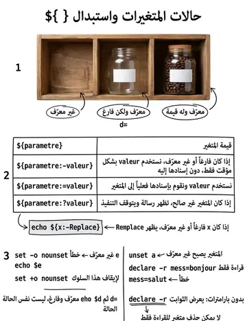
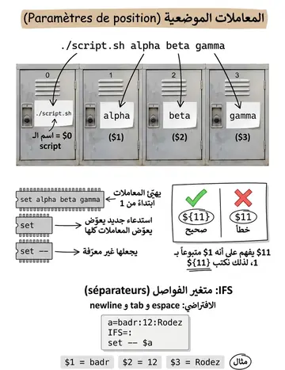

Substitutions & paramètres positionnels
الاستبدالات والمعاملات الموضعية
الشرح بالعربية
المعاملات الموضعية: $0 اسم السكربت، $1..$9 الوسائط، و${10} بعد العاشر. $# عددها. $@ و$* كلها، والفرق عند التنصيص: "$@" تحافظ على حدود كل وسيط بينما "$*" تدمجهم بفاصل IFS. ${n} تمنع الغموض. set تثبت معاملات جديدة، وshift n يحذف الأوائل للمرور على الكل.
Illustrations de la leçon
2 planches · cliquez pour agrandir

Contenu de la leçon
Le cours en français, avec les termes techniques et les exemples.
Effectuer un certain nombre de substitutions lors de l’affichage:
$paramètre
=> affiche la valeur courante de paramètre
${paramètre}
=> affiche la valeur courante de paramètre et autorise la concaténation.
${paramètre:-valeur}
=> affiche la valeur courante de paramètre si elle est non nulle, sinon affiche Valeur
${paramètre:=valeur}
=> affiche la valeur courante de paramètre si elle est non nulle, sinon affiche valeur et affecte à paramètre valeur,
${paramètre:?valeur}
=> affiche la valeur courante de paramètre si elle est non nulle, sinon on écrit valeur sur la sortie standard et on sort.
SUBSTITUTIONS DES VARIABLES
Un paramètre de position est référencé par un ou plusieurs chiffres : 8 , 0 , 23
L’assignation de valeurs à des paramètres de position s’effectue :
soit à laide de la commande interne set
soit lors de l’appel d’un fichier shell ou d’une function shell.
On ne peut utiliser ni le symbole =, ni la commande interne read pour affecter directement une valeur à un paramètre de position.
Ex :
$ 23=bonjour23=bonjour : commande introuvable
$
$ read 4Aa bash: read: « 4 » : identifiant non valable
$
PARAMÈTRES DE POSITION
La commande interne set affecte une valeur à un ou plusieurs paramètres de position en numérotant ses arguments suivant leur position. La numérotation commence à 1.
Syntaxe : set arg1 ...
Ex :
$ set alpha beta gammaalpha est la valeur du paramètre de position 1
beta est la valeur du 2ème paramètre de position
gamma est la valeur du paramètre de position 3
COMMANDE INTERNE SET
Pour obtenir la valeur d’un paramètre de position, il suffit de placer le caractère $ devant son numéro. Ainsi, $1 permet d’obtenir la valeur du premier paramètre de position, $2 la valeur du deuxième et ainsi de suite.
Ex :
$ set ab be ga=> numérotation des mots ab, be et ga
$ echo $3 $2ga be
$ echo $4$
COMMANDE INTERNE SET
Tous les paramètres de position sont réinitialisés dès que la commande interne set est utilisée avec au moins un argument.
Ex: $ set coucou
$ echo $1 coucou$ echo $2=> les valeurs be et ga précédentes ont disparues
$
La commande interne set -- rend indéfinie la valeur des paramètres de position préalablement initialisés.
Ex : $ set alpha beta
$ echo $1 alpha$ set --$ echo $1=> les valeurs alpha et beta sont perdues
$
COMMANDE INTERNE SET
Variable prédéfinie IFS et commande interne set :
La variable prédéfinie IFS du shell contient les caractères séparateur de mots. ( Par défaut, ce sont les caractères espace, tabulation et interligne). L’initialisation de IFS est effectuée par bash.
( Ex : $ set Jean:12:Rodez (3 arguments si IFS=: et un seul sinon)).
Utilisée sans argument, set a un comportement différent : elle affiche, entre autres, la liste des noms et valeurs des variables définies. (Ex : $ set | more)
Si la valeur du premier argument de set commence par un caractère - ou +, une erreur se produit.
En effet, les options de cette commande interne commencent par un de ces deux caractères.
Pour éviter que ce type d’erreur ne se produise, on utilise la syntaxe : set --arg…
COMMANDE INTERNE SET
Un paramètre spécial est référencé par un caractère spécial.
L’affectation d’une valeur à un paramètre spécial est effectuée par le shell (implicitement).
Pour obtenir la valeur d’un paramètre spécial, il suffit de placer le caractère $ devant le caractère spécial qui le représente.
PARAMÈTRES SPÉCIAUX
$# : donne le nombre d’arguments passés au script
${#var} : longueur de la variable "var"
$* : liste complète des valeurs des paramètres
représente un seul mot constitué de la valeur de tous les paramètres positionnels séparées par le premier caractère de la variable spéciale IFS.
Ceci signifie que $* est équivalent à "$1c$2c...'', dans laquelle c est le premier caractère de la valeur de la variable IFS.
Si IFS est nulle ou inexistante, les paramètres sont séparés par des espaces.
$0 : le nom du script
PARAMÈTRES SPÉCIAUX
$n, ${n} valeur du nième argument du script,
$@ équivalent à $*, mais $@ signifie: "$1" "$2" ... "${n}"
chaque paramètre se transforme en un mot distinct
$$ le numéro de processus du script,